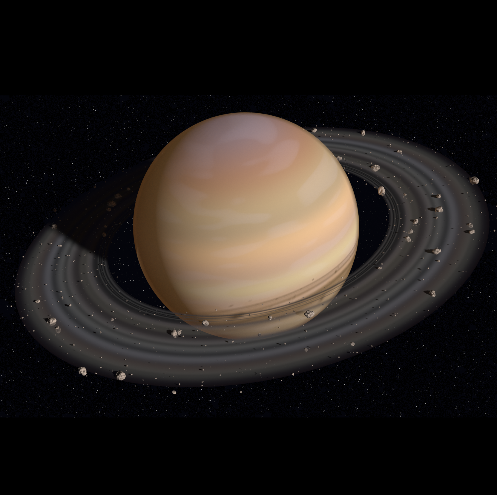

Сатурн е шестата планета од Сонцето. Таа орбитира на околу 10 астрономски eдиници од Сонцето и е втората по големина во сончевиот систем по Јупитер. Сатурн е изграден претежно од разни гасови и е таканаречен гасен џин. Познат е по својот систем на прстени, што се состојат главно од честички на мраз со помала количина на остатоци и прав. Името го добил од римската митологија - Сатурн е бог на земјоделството.

Кристијан Хејгенс во 1655 година е првиот кој сватил дека прстените не се цврсти, туку се составени од вселеснки отпадоци кои орбитираат околу планетата. Најширокиот и најсветлиот прстен е Прстен B, а Прстен А е подалеку и е поблед. Прстените се само 100м широки, што е навистина малку во спореба со нивниот радиус од 135.000км. во Прстенот А има тесна празнина наречена Encke's Division (Енкова Дивизија), околу која орбитира месечината Пан. Атлас орбитира околу надворешниот раб на Прстенот А. Војаџер сондите открија нов надворешен прстен, Прстен F. Околу овој прстен се вртат месечините Прометеј и Пандора.
Сатурн е 75% азот и 25% хелиум, слично на Јупитер, и има карпесто јадро. Се врти брзо и како последица на тоа е раширена кај екваторот. Температурата на јадрото на Сатурн изнесува 120000К поради постепена гравитациона компресија, позната како механизам на Келвин-Хелмхолтц, што исто така се случува на Јупитер и Нептун, но не и на Уран. Брзината на ветровте во атмосверата достигнуваат до 1800 км/часСатурн околу својата оска се завртува за 10,5 часа а околу Сонцето за 29,46 години. Сатурн има дури 18 сателити. Најпознат и најголем од сите е Титан.
Сатурн има познати 62 месечини.Покрај нив има и стотци други помали месечини со дијаметар 40-500 метри(кои не се сметаат за вистински месечини) од кои се формираат прстените на Сатурн.Титан е најголемата месечина на Сатурн,со големина приближно околу 90% од целата маса во орбитите околу Сатурн.Втора по големина месечина на Сатурн е Реам,за која се смета дека има свој систем од прстени(но ова не е потврдено).
Дознај повеќе за Сатурн
| Апхел |
61.513.325,783 km 10.11595804 AU |
| Перихел |
1,353,572,956 km 9.04807635 AU |
| Голема полуоска |
1,433,449,370 km 9.58201720 AU |
| Орбитален период |
10,832.327 дена 29.657296 yr |
| Ѕвезден период |
378.09 days |
| Просечна орбитална брзина |
9.69 км/s |
| Познати сателити |
62 |